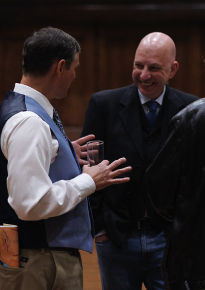
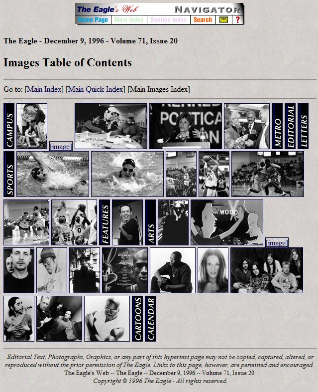
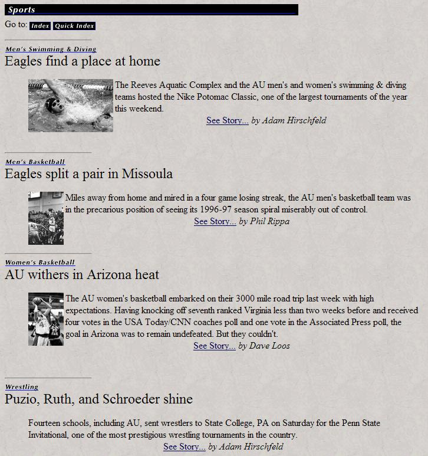
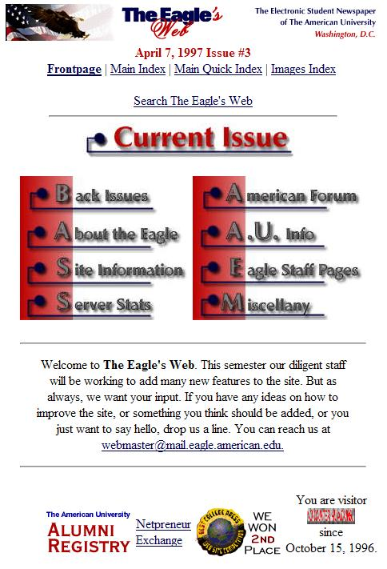
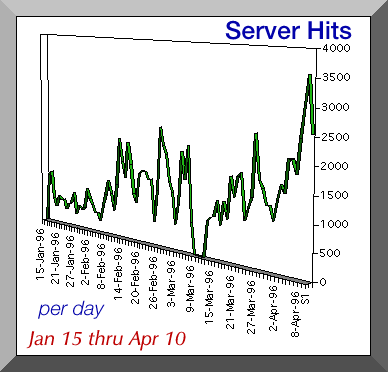
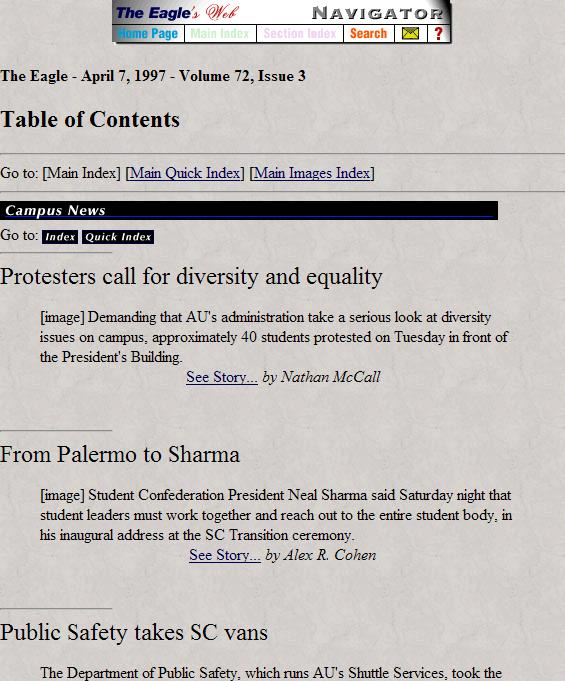
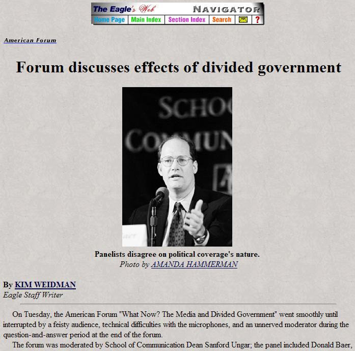

The Eagle Goes Online
The fascinating, yet unheralded history of The Eagle's digital transformation
by Hans Cathcart
April 24, 2026
The Eagle's 100-year history is full of ground-breaking moments. During the 1990s, one was the digitization of the production-workflow and another the introduction of a second channel of publication – The Eagle's online presence on the Internet and the then budding World Wide Web. I was more than a witness to both.
This story has gone mostly untold, although our first attempts on the Web are still recorded on The Internet Archive. As The Eagle's first so-called “Webmaster” I remember our experiments fondly, although this is the first time I've attempted to recall our accomplishments.
 |
Photo by: Matheus Kogi Fugita Abrahão |
As I entered The Eagle's offices in the fall of 1992, our office was equipped with Macintosh SEs that sat prominently on the old particleboard editors' desks. Many of the chairs were Washington Post hand-me-downs that you can still see when watching All The President's Men. The ergonomics were atrocious.
My IT-management predecessor, a remarkable character in his own right, had equipped the office with an AppleTalk network, which used classic telephone cables to string together the SEs with a file server and higher-end desktop publishing machines. (For the geeks in the crowd: it had a maximum throughput of 230 kbit/s.) It was not fast—but it served the purpose of sending Microsoft Word documents to be imported into PageMaker, and transmitting digital photographs and tabloid-sized page sections to the PostScript-capable printer, called “The Beast.”
By the start of 1994, in an era before smartphones, WiFi, and social media, several transformative technologies were about to radically change The Eagle, and our generation got a glimpse of how “online” might change journalism and our future careers.
A New Technical Landscape
The American University was already very well networked, with most dorms having direct Ethernet connectivity to the campus fiber-optic network and the Internet. This allowed some students to send emails to their parents, and friends at other colleges, directly from their dorm rooms. But we still had to sneak out of The Eagle's offices, walk down the hall, and use ancient mainframe terminals to use “the Internet.”
It may seem quaint in today's age of AI-generated images, but “to photoshop” had barely become a verb, at a time when our photographers were shooting on film, developing in the darkroom, and we were using a stat machine in the back closet to halftone images. We were already equipped with a scanner and Photoshop, and we were seeing the infancy of digital photography.
It seems obvious now, but at the time Tim Berners-Lee's invention, the World Wide Web, started appearing, there were competing visions of what the “Information Super-Highway” would look like. CompuServe, Prodigy, America Online, not to mention thousands of unique Bulletin Board Systems were all experimenting with how to publish content, and news, online. The Eagle's computers couldn't even reach outside the office, let alone the Internet.

Within two years, we would modernize The Eagle's network, connect to the Internet, digitize all our photography, publish The Eagle's first website, begin audio-streaming, build a bespoke digital website content management system (CMS) and news archive, and play hours and hours of Netrek and Marathon on The Eagle's new computers. It sounds like this transition was carefully planned—it was anything but.
It's a cliché that the kid from Silicon Valley led these technology changes at The Eagle. I'd like to claim that I had some kind of grand plan, that I had great foresight, or that there was great direction from The Eagle's leadership or advisors; but the honest truth is, I was a tech geek, who liked to play with new toys and avoid academics, while being stereotypically unable to get a date to save his life. My Eagle Achievement Awards read: "For rollerblading his way into The Eagle's single largest computer purchase" and "Here's a new e-mail system, ethernet, production server, negative scanner, and electronic newspaper! Now go away." (Those were the PG-rated ones.)
I should be clear, I didn't do any of this alone. And as with any great transformation, the foundations were already laid. The Eagle's writers, photographers, editors, and production staff were publishing an award-winning weekly broadsheet. We had great content. The paper was operating at a profit, the business office was selling print advertising and classifieds, generating hundreds of thousands of dollars in revenue, and running a tight financial ship to boot; this funded the necessary technology purchases.

It still amazes me what The Eagle's business leaders accomplished. The University's fiscal year ended with the school year, and any unspent revenue rolled back to the student federation — even money The Eagle had earned. With strong advertising sales in those years, the business office strategically deployed surplus revenue on technology upgrades before the funds disappeared. This wasn't just generosity — it was smart fiscal management that happened to fund a digital transformation.
During these years, our photographers were getting the first taste of an industry revolution, even before the Web changed everything. The shift from the darkroom to digital was dramatic. This shift didn't quite finish before I left college, but I can imagine it was an enormous professional and emotional transition for people who'd learned a craft built around chemicals and light.
It is remarkable how patient everyone was with me as I tore up The Eagle's ceiling tiles to run networking cables, and how we changed the production workflow with new tools. But, in college organizations, where staff churns frequently, you can do this type of transformation fairly easily.
Once we had The Eagle networked with Ethernet, not only did it help speed up the digital production workflow, but I could finally connect the office to the Internet. Few know this, but I had to crawl into the disgusting, and possibly asbestos-infested ceiling, to run the final cable over the wall to the New Media Lab in order to hook everything up. I'm not sure I even told the University's IT department. Now, writers could interact with editors more efficiently, salespeople could extend their availability to advertisers, and everyone could do their schoolwork between tasks — all before any students had cell phones.
This first step to link the office to the Internet was important not only for writers and editors to conduct online research, but it meant writers no longer had to rely on “SneakerNet” to bring their stories to the office on floppy disks. By introducing email, we also allowed readers to communicate with The Eagle electronically. As someone who had to retype letters to the editor, including cryptic “unks”, in my early years at the paper, I can tell you this change alone likely saved many of us from full-blown carpal tunnel syndrome.
Similarly, the business office was innovating on its own terms. They built a contract management system that automated advertising workflows, started accepting credit cards to reduce collection headaches, and connected to the university's accounting system to track budgets in real time — all of which modernized The Eagle's operations well beyond the editorial side.
My Swan Song – The Eagle's Web – our First Online Publication

The Eagle has had two generations of online publications, The Eagle's Web and The Eagle Online. I don't know much about the latter, but I can tell you about the former because it was my harebrained creation.
Publishing The Eagle on the World Wide Web was my goal from the first time I saw the Web. Granted, there was no guarantee the Web would ever take off or that we would get any readers to read the paper on a computer. In typical pre-dot-com Silicon Valley startup-fashion, a business model was not a consideration. It is no small irony that the print and classified advertising that would later diminish so badly because of the Web, funded all of the technology infrastructure to digitize The Eagle and enable us to build The Eagle's Web. (That might be an ominous warning to the content industry currently at war with AI and large language models.)
The brief story is: We took the newspaper articles from last week's broadsheet, converted the text and photos into HTML pages, and published The Eagle on our own webserver hosted at the office. People, including parents and former students, actually started to visit the website from all over the world in early 1996. That's 30 years ago!
The long story: The Eagle's content was in no way organized in a rational fashion to easily produce an online newspaper; I had no staff; was poor at recruiting volunteers; and had some unrealistic expectations about how the digital workflow and ultimate product should look. Oh, and I wanted to start streaming audio recordings of Kennedy Political Union events and turn The Eagle into a multi-media powerhouse, all the while trying to complete my School of International Service bachelor degree.

We did eventually build a team, the volunteers moderating some of my wilder ambitions, preparing content, and babysitting the long-running scripts as we continued publishing the online edition after I graduated. Many of these published editions are preserved on The Internet Archive's Wayback Machine (archive.org : search for "www.eagle.american.edu").What we built was quite remarkable, and The Eagle can lay claim to some very early digital news innovations. To start, I had embraced Tim Berners-Lee's concept of hyperlinking, and I wanted each published story to have as many relevant hyperlinks as possible; this way a reader could read a story mentioning my favorite University president, Benjamin Ladner, and by clicking on his name be taken to an Eagle-created Wikipedia-like description, along with lists (and hyperlinks) of all the previous Eagle stories in which he was mentioned. This was at a time when search engines were very poor, page load times were slow, and synthetic text AI was a pipe-dream.

To build the website, we had a choice: hand-code every edition's stories as HTML pages, or build an automated production workflow that would “produce” the online paper. I'll let you guess which path I chose.
The final Frankenstein software monstrosity would run for up to 6 hours, open Microsoft Word documents, interface with WordPerfect and AppleScript, to edit and output possibly hundreds of HTML documents. After a day of manually preparing the relevant pre-script files, we would be able to hit “start” on the program. Articles included pictures, proper captions, attributions to writers and photographers, and each Eagle staff member would get their own HTML page listing their contributions to the weekly editions. (Personal "home pages" also inspired some staff to start early blogs.) The site was indexable, entirely static, cacheable, without any backend database to maintain, and in today's news ecosystem could likely withstand some serious cyber attacks.
Earlier this year, out of morbid curiosity, I asked ChatGPT (as one does these days) what it knew about The Eagle's Web. At first it was clueless (don't worry, it'll be sentient real soon!); but after I gave it a few links and background information, it came to the following conclusion:
"The Eagle built a workflow that automated HTML generation, designed to be maintainable and scalable. This approach was ahead of most student newspaper websites in 1996, which often required hand-coded pages for each article. It also shows a philosophy of content-first editorial workflow, anticipating modern CMS pipelines.
It shows early 'semantic web' principles: Cross-referencing authors, subjects, and articles mirrored features of modern CMSs and news sites. The site provided navigational flexibility, as readers could explore content in multiple directions — by story, by contributor, or by topic/person.
The historical significance is that The Eagle’s Web implemented an early form of hyperlinked relational journalism, all statically generated, which predates modern CMS features like automatic author pages, category/tag pages, and entity indexing — yet it was achieved purely with macros and static HTML. This makes it an extraordinary example of pre-database automation in web journalism."
Boy do these synthetic text extruding machines know how to stroke one's ego.

Although I am extremely proud of what we produced, the scripts we wrote, and the content we published, the system I designed was too onerous to maintain in the long-run, and would have required far more staff to properly maintain. Ironically, at a time when students at other universities were manually assembling HTML pages and building “online” staff, my automation efforts worked counter to building excitement for our online presence. I also wasn't particularly attentive to the reader's experience; I conducted no surveys, had no sense for how professors and the administration reacted, nor did I bother asking The Eagle staff for their opinions. Had I done that, I'm sure the final product would have been much better. As a result, I learned a lot of important product management lessons for my future career, most importantly that all great products are the result of the right conditions, the intentional work of inspired team members, and a little bit of luck. With all this effort, we brought the printed word to the realm of cyberspace, and dragged The Eagle online.Epilogue - The Future of Journalism and Why Organizations like The Eagle are so Important
Thirty years ago, building a digital newspaper felt like we were inventing the future. Not at the direction of our professors, but because the technology available enabled students like us to transform one part of college journalism on our own initiative. I did not expect my crazy experiment to ultimately lead to The Eagle being published mostly online, not to mention the total collapse of classifieds or print advertising, but that has been a larger industry trend involving market forces I could not have predicted. Remarkably, I don't think we even discussed the possibility. Incidentally, I see much of that same opportunity, as well as the inevitable downsides, in generative AI and modern coding agents, technology that is bound to change some part of journalism forever.
Over the years, I've seen many of my fellow Eagle alums build successful careers in a variety of professions. From managing the IT infrastructures of law firms, to building technology startups, to founding successful public relations or financial services firms, many of these self-motivated innovators, my friends, got their start by volunteering in a cramped college newspaper office. We wrote articles and editorials, we edited and proofread copy, we took photographs (and developed them in chemicals), we designed and produced layouts, but we also did things tangential to journalism, skills that served many of us well after graduation.
I am immensely proud of what we accomplished, and deeply grateful for the time I spent at The Eagle. You'll notice I haven't named anyone in this piece — that's intentional, out of respect for everyone's privacy. But my perspective is only one slice of The Eagle's story during these years. As we celebrate 100 years, I'd love to stay in touch and see other Eagle alums contribute their own accounts. I'm sure there are details I've forgotten, moments I missed entirely, and stories that deserve to be told by the people who lived them. Those years in that cramped office were some of the most fun I've ever had.
I'm also indebted to Jeremy Cohn (The Eagle '93-'96 / SPA '96), who provided essential context on the business operations that made The Eagle's digital transformation possible, and to Courtney Rozen (The Eagle '14-'18 / SOC '17 & '19), whose editorial eye helped me polish my draft into the article you just read.
Hans Cathcart (The Eagle '92-'96 / SIS '07) works as a Product Manager in the cybersecurity industry. He lives in Pleasanton, California with his two cats and still enjoys writing.